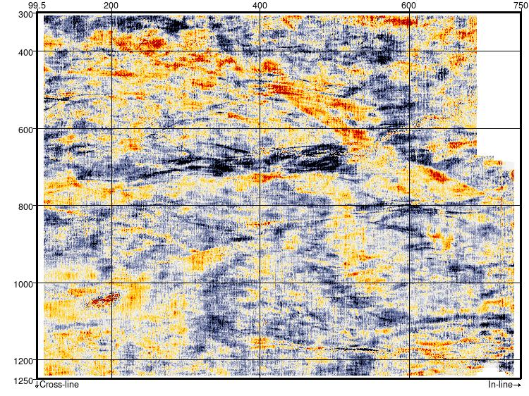

Spatial Filters - Rectangular Symmetry
Script: Filtering/ex_spatial_filter_rectangular.py
Description
This Python External Attribute script applies lowpass, highpass, bandpass or band reject spatial filters with rectangular symmetry. The filters are applied by direct spatial convolution of a kernel formed by cascading two 1D MAXFLAT operators (Khan and Ohba (2001)).
By setting the stepout in one direction to 0 the filter will be applied as a 1D spatial filter in the other direction.
Note that the filter cutoff or band pass/reject frequency is specified in Normalised Spatial Frequency. Normalised Frequency ranges from 0 to 1 at the spatial nyquist. Converting a spatial frequency in cycles/metre to the equivalent Normalised Spatial Frequency is as simple as dividing it by the spatial nyquist frequency.
Examples
This example shows inline and crossline FK spectra after applying a 2D lowpass rectangular filter with inline and crossline normalised frequemcy cutoffs of 0.6 and 0.3 respectively.
Inline FK Spectrum


Crossline FK Spectrum


This example shows a timeslice at 300ms TWT from the F3 Demo dataset after applying a 1D spatial filter along the inlines (stepout of 0,9) with a crossline normalised frequency cutoff of 0.5.
Crossline Lowpass Filter


This example shows the timeslice at 300ms TWT from the F3 Demo dataset with the crossline lowpass filter above followed by a 1D spatial filter along the crosslines (stepout 9,0) with an inline normalised rejection frequency of 0.17.
Inline Bandreject Filter

Input Parameters
| NAME | DESCRIPTION |
|---|---|
| Stepout | Determines the size of the convolution operator. Minimum of 9 (filter kernel size of 19) recommended. Setting the stepout to zero will apply a 1D filter, e.g. a stepout of 0,9 will apply a 1D crossline frequency filter |
| Type | Filter type - Low Pass, High Pass, Band Pass or Band Reject |
| Normalised Inline Spatial Frequency | For Low Pass and High Pass filters this specifies the inline filter cutoff. For Band Pass/Reject filters this is the centre of the pass/reject band. The width of the band is hardwired to +/- 0.2 in the script. The filter cutoff corresponds to the half amplitude point. |
| Normalised Xline Spatial Frequency | For Low Pass and High Pass filters this specifies the crosslineline filter cutoff. For Band Pass/Reject filters this is the centre of the pass/reject band. The width of the band is hardwired to +/- 0.1 in the script. The filter cutoff corresponds to the half amplitude point. |